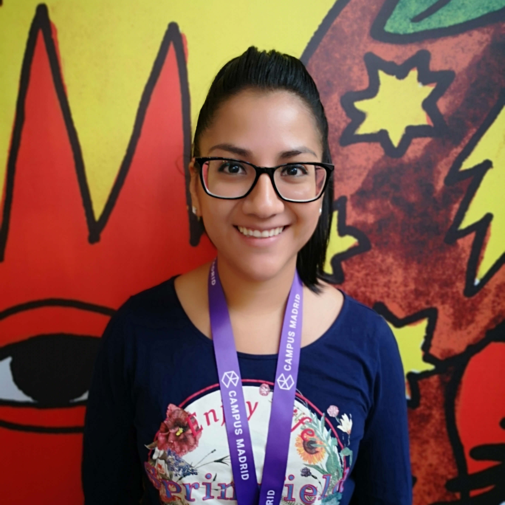
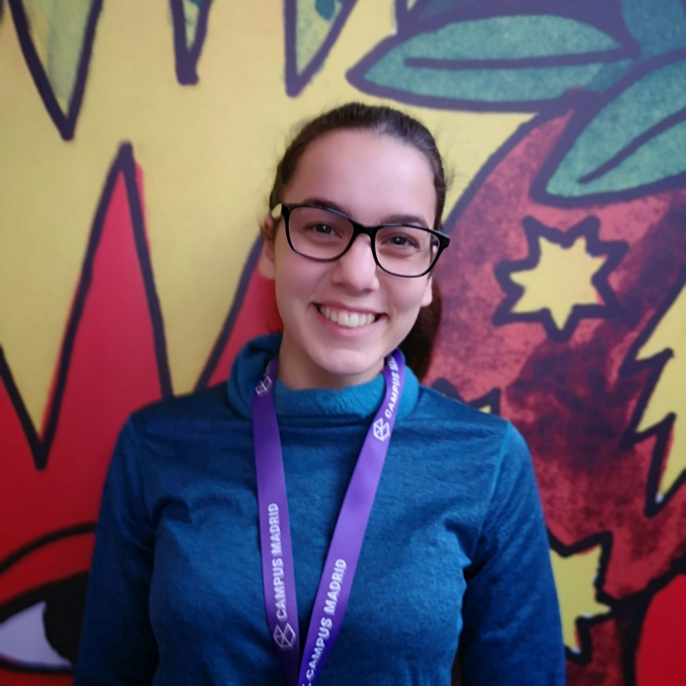
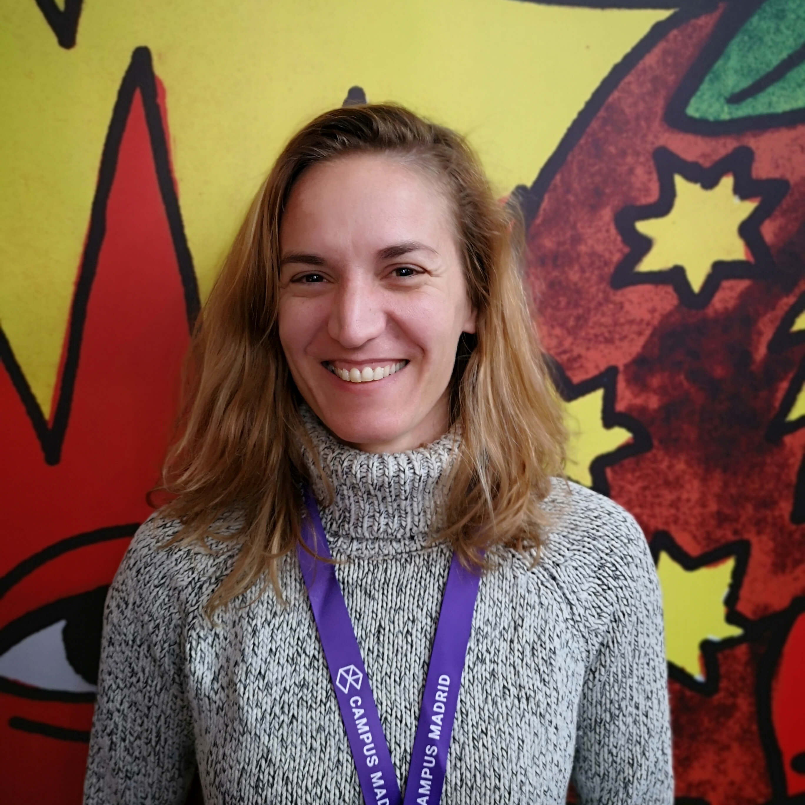

Creamos tu web. Difundimos tus sueños
Equipo
Somos un grupo de 5 mujeres con recorridos formativos y profesionales muy diversos, cuyos caminos nos fueron guiando hasta conocer Adalab, donde hemos sido formadas como programadoras Front-End.
Nuestro compromiso es ofrecer un servicio personalizado, completo y cuidado, con el cual podrás impulsar tu idea o negocio a cualquier lugar del mundo.
Fortalezas
Somos un grupo muy polifacético con diversas cualidades que nos permite abordar todo tipo de proyectos. Además nos entusiasma nuestro trabajo y nunca nos cansamos de aprender y mejorar.
Debilidades
Nuestra corta trayectoria implica que aún nos falta mucho por conocer en el campo de la programación Front-Ed. Sin embargo, gracias a nuestro compromiso, ilusión y ganas de seguir creciendo y aprendiendo dichas carencias son superadas exitosamente.
QUIÉNES SOMOS
-

Carolina
De informática a técnico de calidad de móviles. Buscando un cambio en mi vida profesional para desarrollarme en lo que siempre me gustó "El desarrollo web", Gracias a Adalab podré hacer mi sueño realidad y desarrollarme en este sector.
-

Laura
Antigua estudiante en Farmacia. Te sirve desayunos y te hace un Black Russian que te deja tumbado en el suelo. Amante de los animales, en especial de los cánidos. Buscando reinventarse, encontró Adalab.
-

Lilia
Licenciada en Derecho. 8 años de experiencia comercial y ha tomado la decisión de reorientar su carrera profesional con el ánimo de continuar aprendiendo y , también, aportar toda su experiencia adquirida. Considera que el cambio es un signo de capacidad de superación.
-

Paula
Mi trayectoria siempre ha ido de la mano de la creatividad, estudié audiovisuales, animación y multimedia, y mi carrera profesional se ha centrado en la edición de vídeo. Soy una persona curiosa, inquieta y entusiasta, me gusta enfrentarme a nuevos retos y el desarrollo front-end se ha convertido en mi mayor pasión.
-

Roxana
Domadora de pixeles y Gamer Junior. Tras graduarse en Bellas Artes en la Universidad Complutense de Madrid dedicó unos años a experimentar y realizar proyectos multidisciplinares entre que servía café y café por las mañanas y fotografiaba “zombies” por las noches en los garitos de moda de la capital. Actualmente se ha lanzado al mundo digital, donde espera exprimir su potencial y triunfar en la vida, como lo hace su “Sims”.